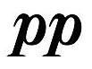

Dynamics tell you how loud or soft to play something. The fundamental dynamics are piano for soft and forte for loud.
Piano

Forte
You may also see those markings doubled for pianissimo(very soft) and fortissimo(very loud).

Pianissimo

Fortissimo
Finally, there are two dynamics between piano and forte: mezzo piano, which is moderately soft, and mezzo forte, which is moderately loud.

Mezzo Piano

Mezzo Forte